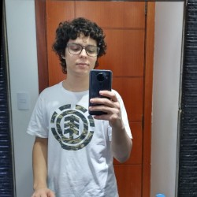

Quem sou eu?
Hello World!, meu nome é Vinicius. Moro em Hortolândia e estudo engenharia de computação no UNASP, tenho o sonho de ser um desenvolvedor Web fullstack, atualmente estudo HTML, CSS, JavaScript e Java. Atuei como estagiário na prefeitura municipal de Hortolândia. Faço projetos pessoais e posto a maioria no meu perfil do GitHub. No meu tempo livre gosto de ler, tocar piano e jogar.